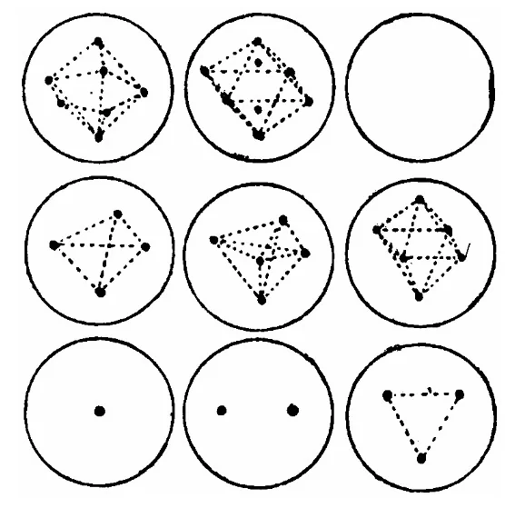
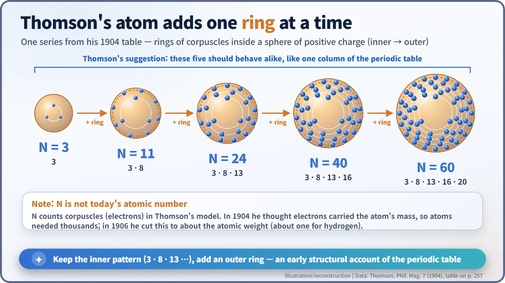
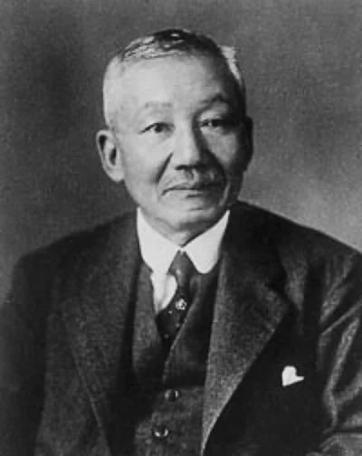
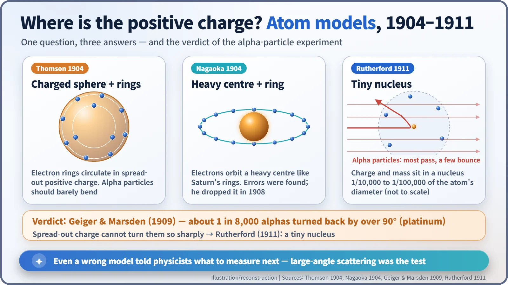

Nuclear History · 014
The Pudding He Never Named — Thomson's Atomic Model (1904)
Thomson's atom was a set of whirling electron rings, not raisins in a cake, and the famous nickname came from an anonymous 1906 magazine article.
In March 1904 J. J. Thomson published a model of the atom in which rings of electrons circulate inside a sphere of evenly spread positive charge, and used the rings to try to explain the periodic table. The famous nickname "plum pudding" was not his: it first turns up in an anonymous 1906 magazine article. Alpha-particle experiments in 1909–1911 retired the model, but not before it had shown what needed to be measured.
A title longer than some abstracts
"On the Structure of the Atom: an Investigation of the Stability and Periods of Oscillation of a number of Corpuscles arranged at equal intervals around the Circumference of a Circle; with Application of the Results to the Theory of Atomic Structure."
That is not an abstract. It is a title. It sits at the top of a paper by J. J. Thomson (Joseph John Thomson, 1856–1940) published in the Philosophical Magazine in March 1904. Read all 29 pages and you will not find the words "plum" or "pudding" anywhere. Yet textbooks everywhere call this "Thomson's plum pudding model". So where did the name come from, and what did Thomson's atom actually look like? [1]
Found the electron, lost the positive charge
In 1897 Thomson had shown that cathode rays are streams of negatively charged particles far lighter than any atom. He called them "corpuscles"; we call them electrons. That immediately raised the next puzzle. Atoms are electrically neutral, so something positive must balance the electrons. What shape is it, and where does it sit?
The first answer came from Lord Kelvin (William Thomson, 1824–1907, no relation). In a 1902 paper titled "Aepinus Atomized", he pictured a ball of positive electricity with negative particles resting inside it in static balance. Thomson took that picture and set it in motion. [3]
March 1904: an atom built from rings
The paper opens with "the view that the atoms of the elements consist of a number of negatively electrified corpuscles enclosed in a sphere of uniform positive electrification". So far, so pudding-like. The real content comes next. The corpuscles are spaced evenly around a circle and whirl round as a ring. The positive sphere pulls every corpuscle towards the centre, while the corpuscles push one another apart. Thomson worked out, mathematically, when that tug-of-war produces a stable ring. [1]
His inspiration was almost a toy. In 1878 the American physicist Alfred M. Mayer stuck magnetised needles into corks, floated them in water, and held a strong magnet above. The needles repelled each other yet were drawn inwards, and they settled by themselves into neat polygons and concentric rings. In a lecture at the Royal Institution in London in March 1905, Thomson showed drawings of the stable arrangements for one to eight corpuscles. [3]

With more corpuscles, the rings stack up. In Thomson's table, an atom with 60 corpuscles has five rings holding 3, 8, 13, 16 and 20, from the inside out. Now look at the atoms with 3, 11 (3 + 8), 24 (3 + 8 + 13), 40 and 60 corpuscles: the inner pattern stays identical and each simply adds one outer ring. Thomson suggested such atoms would behave alike and fall in the same column of the periodic table, a regularity he called "very analogous to that expressed by the periodic law". It was one of the first attempts to explain the periodic table through the inner structure of atoms. [1] [3]

One caution: these numbers are not modern atomic numbers. In 1904 Thomson believed nearly all of an atom's mass came from its corpuscles, so an atom would need thousands of them. In June 1906, using three quite different measurements (the scattering of X-rays, the absorption of beta rays and the way gases bend light), he revised himself: the number of corpuscles was "not greatly different from the atomic weight", about one for hydrogen. Most of the mass, then, had to belong to the positive charge. [2] [3]
So who brought the pudding?
The earliest use found so far is an unsigned article, "What is Matter?", in the British trade journal The Chemist and Druggist on 25 August 1906. It described the corpuscles swimming about in a sphere of positive electrification "like raisins in a parsimonious plum-pudding". A plum pudding is the traditional British Christmas pudding, which, despite its name, is packed with raisins and other dried fruit rather than plums. "Parsimonious" was the joke: a stingy cook, so the raisins are few and far between. [5]
Historians of science point out that Thomson never used the comparison, either in the 1904 paper or in later writings. A popular-science nickname slipped into the textbooks and hardened into his label. That is why many people picture raisins sitting still in a cake, when Thomson's atom was a dynamic structure of rings in constant motion. [4]
Meanwhile in Tokyo: a Saturn-shaped atom
Also in 1904, the Japanese physicist Hantaro Nagaoka (1865–1950) proposed a "Saturnian" model: a ring of electrons orbiting a heavy positive centre. It looks like a forerunner of the nuclear atom, but errors in its calculations were pointed out that same year, it could not explain atomic spectra, and Nagaoka himself dropped it in 1908. Rutherford mentioned it briefly in his 1911 paper, but there is no evidence that it directly shaped his nuclear model. [3]

One in 8,000: the experiment that ate the pudding
Experiment delivered the verdict. In 1909 in Manchester, Hans Geiger and Ernest Marsden fired alpha particles at thin metal foils. With platinum, about one alpha particle in 8,000 bounced back by more than 90 degrees. Positive charge spread thinly through the whole atom could never turn such heavy, fast particles so sharply. In 1911 Ernest Rutherford concluded that the positive charge and almost all the mass must be packed into a tiny centre, the nucleus, and Thomson's model left the stage. [3]

A wrong model, a useful map
That does not make Thomson's model a waste of effort. It left behind the idea that the arrangement of charges inside an atom decides an element's character, and a clear prediction, that spread-out positive charge should barely deflect alpha particles, which experimenters could test. A wrong model, it turned out, was a good map of what to measure next.